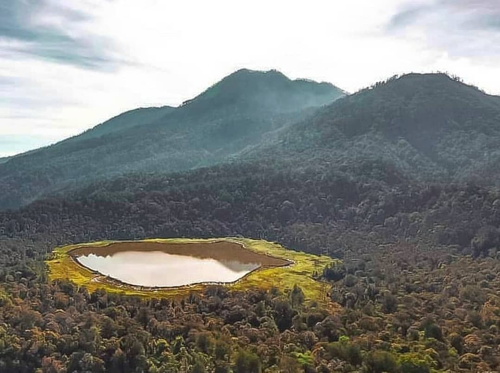
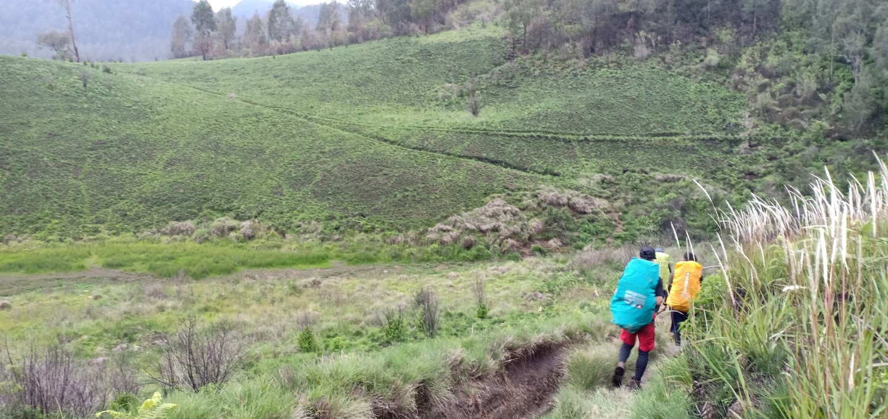
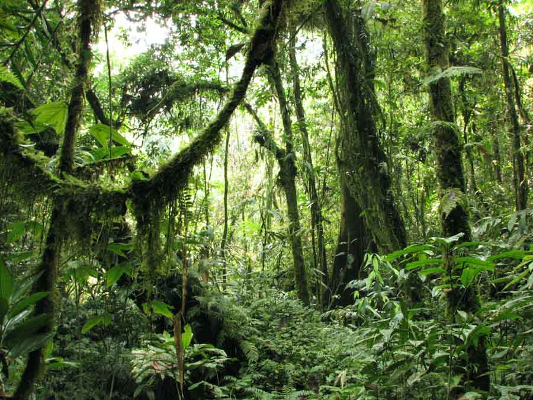
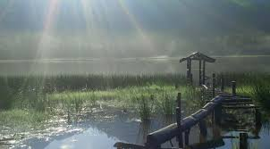

Pendakian Gunung Argopuro
Trek Pendakian Terpanjang di Pulau Jawa
Bicara soal pendakian gunung sering kita mendengar beberapa gunung punya predikat tersendiri, semisal gunung tertinggi, gunung terdingin, gunung terekstrim, sampai gunung terangker. Gunung Argopuro salah satunya gunung dengan jalur pendakian terpanjang se-Pulau Jawa. Beberapa orang tentu sudah mengetahui terlebih para pendaki gunung kalau Argopuro memang punya jalur pendakian yang panjang yakni sekitar 63km dan memakan waktu lumayan lama umumnya memerlukan waktu 5 hari 4 malam untuk mendakinya.
Apasih yang istimewa dari Gunung Argopuro?
Gunung Argopuro dengan ketinggian 3088 MDPL ini termasuk deretan semenanjung Gunung Iyang atau Hyang yang membentang sepanjang 5 kabupaten yaitu: Probolinggo, Lumajang, Jember, Bondowoso, dan Situbondo juga diapit oleh Gunung Raung dan Gunung Semeru. Gunung ini juga termasuk kawasan Suaka Margasatwa Dataran Tinggi yang dilindungi dan terjaga keasriannya. Disana dapat kita jumpai habitat dari berbagai macam flora maupun fauna seperti Burung Merak, Babi Hutan, Harimau, Gardenia Palmata atau yang dijuluki oleh para pendaki dengan sebutan Tumbuhan Jancukan. Mengapa dijuluki Tumbuhan Jancukan? karena daun pada tumbuhan ini berbentuk seakan-akan berduri jika disentuh maka akan timbul rasa yang sangat perih pada kulit. Ternyata tumbuhan unik ini tidak semua gunung dapat kita jumpai loh, penasaran keunikan dari tumbuhan ini? langsung saja daftar Event Open Trip Gunung Argopuro ini!
Savana yang Membentang Luas

Yups Savana!
Adalah alasan banyak orang untuk mendaki Gunung Argopuro walaupun dengan jalur pendakian yang sangat panjang. Bagaimana tidak, disini banyak sekali padang savana yang membentang luas dan yang paling populer adalah Savana Alun-Alun Jambangan, Alun-Alun Lonceng, Cisentor, dan Cikasur. Dari banyaknya padang savana di Gunung Argopuro yang paling luas adalah Savana Cikasur disana terdapat panorama yang indah juga sungai yang mengalir didekatnya jika beruntung pendaki dapat bertatap muka langsung dengan Burung Merak dan banyak hewan lainnya. Sensasi tersendiri bukan bagi orang-orang yang kesehariannya berhutankan gedung tinggi dan berpohonkan dinding beton untuk melampiaskan kejenuhannya dengan mendatangi savana ini.
Namun dibalik semua itu, Cikasur menyimpan sejarah yang kelam. Konon dahulu pada zaman kolonial Belanda tempat ini adalah bekas landasan pesawat.Bukti yang menunjukkan bahwa Cikasur adalah pesawat adalah sebuah mesin sebuah mesin genset yang ada disalah satu bekas landasan yang tersembunyi diantara semak-semak belukar. Di badan genset tertera tulisan 1912 sebagai petunjuk masanya. Selain itu, Adanya menara pengawas yangb sudah roboh. Kini kondisi landasan pesawat itu berupa lapangan terbuka yang dipenuhi ilalang dan tempat ini dinamakan lembah Cikasur ladang pembantaian (The killed field) kenapa?
Landasan pesawat ini pertama kali dikerjakan oleh beberapa orang denagn upah. Lalu pekerja itu dipaksa mengajak penduduk lainnya untuk ikut dalam pembangunan landasan pesawat tersebut. Akhirnya semua orang baik orang tua, muda, laki-laki, dan perempuan mendaftarkan diri untuk bergabung.
Setelah pembangunan selesai para pekerja tidak dibayar dan tidak boleh meninggalkan tempat. Mereka dipaksa membuat galian panjang untuk saluran air. Dengan perlakuan kasar dan berbahgai siksaan, disinilah tragedi pembantaian terjadi. Saat galian selesai dikerjakan, beberapa truk terbuka dan serdadu Belanda bersenjata lengkap mendekat dan langsung memberondong peluru ke arahpekerja dengan membabi buta. Galian itu sengaja dibuatuntuk mengubur para pekerja agar lokasi landasan pesawat itu tidak dibocorkan kepada para pejuang.
Landasan ini pernah dikuasai tentara Jepang,namun menjelang kemerdekaan, TNI sempat menguasainya,akhirnya lanjasan itu ditinggalkan karena berada di penguinungan terpencil dan tdak terjamah selama puluhan tahun,bahkan dilupakan.
Hutan Lumut

Salah satu spot unggulan di Gunung Argopuro adalah Hutan Lumut. Pemandangan yang tidak biasa tersaji di dalamnya, Hutan dengan pohon yang menjulang tinggi, dedaunan yang rimbun membuat cahaya matahari sulit menembus tempat ini menyebabkan berbagai jenis vegetasi dapat dengan mudah berkembang salah satunya adalah lumut membuat hutan disana dibanjiri dengan lumut termasuk juga tumbuh pada batang pepohonan.
So tidak perlu datang jauh-jauh ke Hutan Amazon, ataupun Hutan hujan tropis lainnya. Cukup dengan mendaki Gunung Argopuro kamu dapat merasakan Hutan ala Hutan Amazon.
Danau Taman Hidup

Seperti yang dijelaskan sebelumnya, nama yang terkenal dari danau tersebut adalah Taman Hidup. Konon, tempat ini berhubungan dengan legenda Dewi Rengganis, si cantik penunggu Gunung Argopuro. Termasuk danau Taman Hidup yang indahnya tiada tara. Kabarnya, pendaki harus berhati-hati dan menjaga tingkah laku. Tidak boleh berkata kasar dan berteriak-teriak. JIka tidak, Dewi Rengganis akan marah dan mengakibatkan kabut turun, bahkan disertai hujan badai.
Beberapa cerita juga menyebutkan bahwa beberapa pendaki ada yang hilang karena menghadapi kemarahan Dewi Rengganis, dan datang ke danau saat malam hari. Ada juga yang menyebutkan jika pendaki hilang karena mereka tidak tahu medan. Entah apapun penyebabnya, memang tidak disarankan untuk berkunjung saat malam. Selain itu ada juga cerita yang menyebutkan jika Dewi Rengganis dan dayang-dayangnya suka menggoda pendaki untuk menyeburkan diri ke dalam danau.